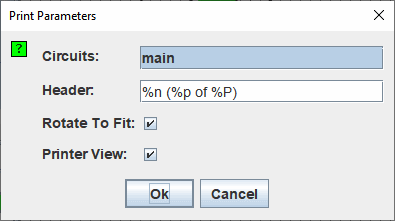

הַדפָּסָה
כאשר אתה בוחר ב| הדפס... |, Logisim מציגה תיבת דו-שיח להגדרת התצורה של מה הוא מודפס.

תצורה של ההדפסה
- מעגלים: רשימה שבה תוכל לבחור מעגל אחד או יותר להדפסה. (מעגלים ריקים לא מוצגות כאפשרויות.) Logisim תדפיס מעגל אחד בעמוד. אם המעגל גדול מדי עבור הדף, התמונה תוקטן כך שתתאים.
-
כותרת: טקסט שאמור להופיע במרכזו בראש כל עמוד. ההחלפות הבאות יהיו
נעשה בטקסט.
%n שם המעגל בעמוד %p מספר עמוד %P סך כל ספירת הדפים %% סימן אחוז בודד ('%') - סיבוב כדי להתאים: אם מסומן, אז Logisim תסובב כל מעגל ב-90 מעלות כאשר המעגל גדול מכדי להתאים לדף ואין צורך לשנות את קנה המידה כמו קטן כאשר מסובבים אותו ב-90 מעלות.
- תצוגת מדפסת: האם להשתמש ב"תצוגת מדפסת" בהדפסת מעגלים.

לאחר לחיצה על אישור , Logisim תציג את תיבת הדו-שיח הרגילה של הגדרת העמוד לפני הדפסת המעגלים.